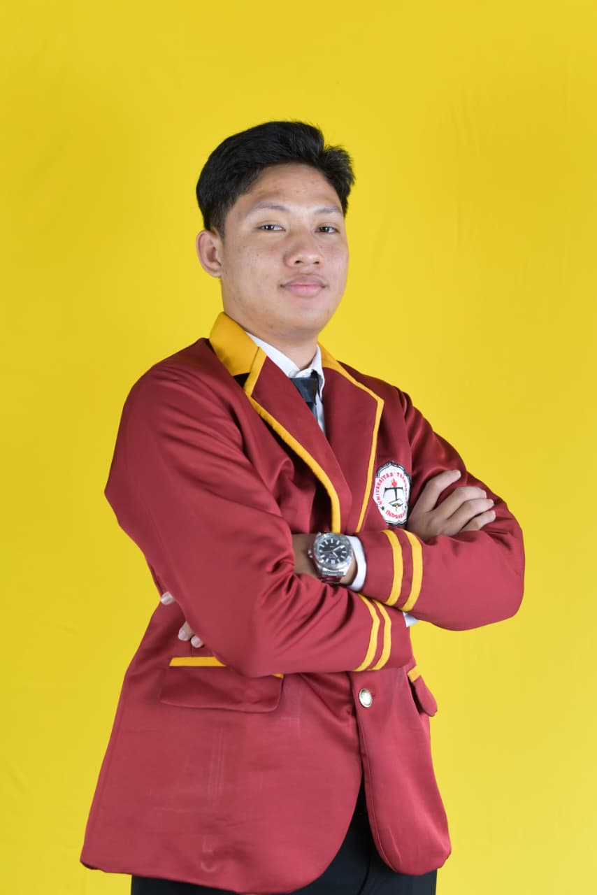

Nusantara Journey
Pengguna sulit menemukan info wisata Bandar Lampung. Solusinya: aplikasi wisata yang memudahkan menemukan dan mengenal destinasi lokal.
#Flutter#Dart#UI/UX
Halo, saya
Mahasiswa Informatika Universitas Teknokrat Indonesia yang tertarik pada UI/UX, desain digital, dan pengembangan aplikasi. Saya senang belajar hal baru dan bercita-cita menjadi pengembang yang merancang produk digital yang rapi dan mudah digunakan.

Saya Muhammad Arkaan Andrean, mahasiswa Program Studi Informatika di Universitas Teknokrat Indonesia. Saya tertarik pada desain, teknologi, dan pengembangan aplikasi. Di waktu luang, saya bermain gitar, membaca komik, dan bermain game.
Pengguna sulit menemukan info wisata Bandar Lampung. Solusinya: aplikasi wisata yang memudahkan menemukan dan mengenal destinasi lokal.
Antarmuka layanan kesehatan yang rumit. Solusinya: desain modern dengan fokus kemudahan penggunaan dan pengalaman pengguna.
Edukasi lingkungan terasa membosankan. Solusinya: konsep game sederhana yang mengenalkan nilai-nilai SDGs.
Butuh etalase karya yang responsif. Solusinya: landing page dengan Laravel dan Tailwind CSS, lengkap dengan dark mode.
2024 – Sekarang
Universitas Teknokrat Indonesia
2021 – 2024
Nama Sekolah Kamu
2025 – Sekarang
Nama Organisasi Kampus
2025
Nama Kegiatan / Kepanitiaan
Dicoding · 2025
Coursera · 2025
Penyelenggara · 2026
Tertarik bekerja sama atau ingin berdiskusi? Pesanmu akan dibuka di aplikasi emailmu.